７月５日（金）午前11時
販売スタート
モデルの桐島かれんさんが
クリエイティブディレクターを務める
HOUSE OF LOTUS（ハウス オブ ロータス）。
「Happiness of Life」をコンセプトに、
さまざまな国の文化を巡って培った
かれんさんの美意識が、
「よそおう」「くらす」「もてなす」
という切り口で表現されています。
2019年４月の「生活のたのしみ展」では、
カラフルな服や小物をはじめ、
世界各国からあつめた雑貨などがならびました。
その中から、オリジナルの服と、
これからの季節に活躍する小物が
ほぼ日ストアに登場します。
毎日の暮らしに、彩りを添えてくれるものを、
ハウス オブ ロータスから。
この夏の毎日が、うんと楽しくなる、
うれしいアイテムがならびますよ。
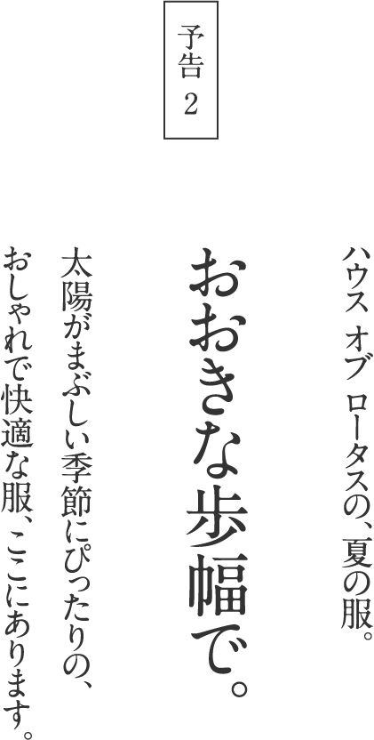
着れば気持ちがあかるくなって、
お出かけしたい気分にしてくれそうな、
出会った人も、なんだかうれしくなるような服。
お出かけしたい気分にしてくれそうな、
出会った人も、なんだかうれしくなるような服。
ベーシックだけれどフレッシュで、
年齢をとわず、生き生きとした印象に。
年齢をとわず、生き生きとした印象に。
桐島かれんさんがプロデュースする
「ハウス オブ ロータス」の、
ワンピースとブラウス、そしてパンツが、
「生活のたのしみ展」にひき続き、
ほぼ日ストアに登場です。
「ハウス オブ ロータス」の、
ワンピースとブラウス、そしてパンツが、
「生活のたのしみ展」にひき続き、
ほぼ日ストアに登場です。
今回のラインナップは、
ギンガムのワンピースとブラウス、
そして、ミラーワークのパンツ。
インドの手仕事と
かれんさんの美意識が出会ってうまれた、
心地よく、着るひとを美しく見せてくれる服です。
ギンガムのワンピースとブラウス、
そして、ミラーワークのパンツ。
インドの手仕事と
かれんさんの美意識が出会ってうまれた、
心地よく、着るひとを美しく見せてくれる服です。
ギンガムチェックワンピース
¥38,880（税込・配送料別）
ふんわりと軽い布地を、たっぷり使った、
からだも、心も、自由になれそうな、
おしゃれで着心地のよいワンピースです。
からだも、心も、自由になれそうな、
おしゃれで着心地のよいワンピースです。
このワンピース、インドでつくられています。
雑貨だけのお店だった「ハウス オブ ロータス」で、
洋服づくりをはじめたとき、
いちばん最初につくったのが、この服。
原点のような存在であり、ずっと人気のアイテムです。
雑貨だけのお店だった「ハウス オブ ロータス」で、
洋服づくりをはじめたとき、
いちばん最初につくったのが、この服。
原点のような存在であり、ずっと人気のアイテムです。
世界のさまざまな手仕事が大好きなかれんさん、
ワンピースをつくるにあたって、
インドの職人の手によるスクリーンプリントで、
ギンガムチェックの布をつくりました。
ワンピースをつくるにあたって、
インドの職人の手によるスクリーンプリントで、
ギンガムチェックの布をつくりました。
手仕事ならではの、ゆらぎのあるチェックは、
ふんわりとした濃淡やにじみで、
織りでつくられたチェックにはない、
やわらかでやさしい雰囲気がうまれました。
ふんわりとした濃淡やにじみで、
織りでつくられたチェックにはない、
やわらかでやさしい雰囲気がうまれました。
襟ぐりや、ギャザーの切り替え、
女性らしく、大人っぽい華やかさがあります。
アクセントの小さなポンポンは、
インドの民族衣装に由来する、手作りのもの。
こんな遊びごころも、かれんさんが提案する
暮らしの中の彩りのひとつです。
女性らしく、大人っぽい華やかさがあります。
アクセントの小さなポンポンは、
インドの民族衣装に由来する、手作りのもの。
こんな遊びごころも、かれんさんが提案する
暮らしの中の彩りのひとつです。
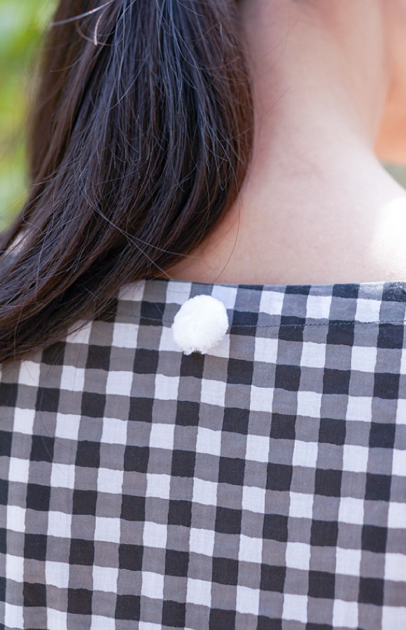
色は、６色。
元気が出そうなイエローやピンク、グリーン。
さわやかなターコイズブルー、
グレーとブラックは、ちょっとシックに。
グリーンとグレーは、ほぼ日だけのカラーです。
元気が出そうなイエローやピンク、グリーン。
さわやかなターコイズブルー、
グレーとブラックは、ちょっとシックに。
グリーンとグレーは、ほぼ日だけのカラーです。
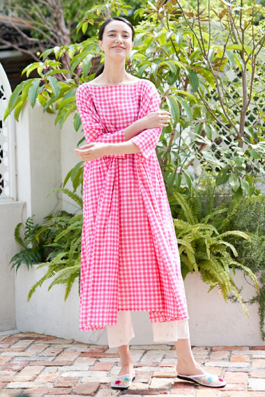
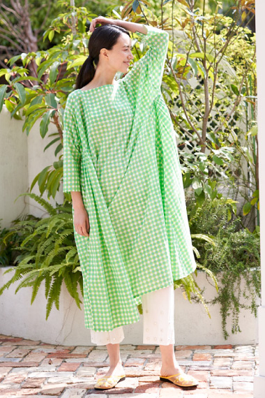
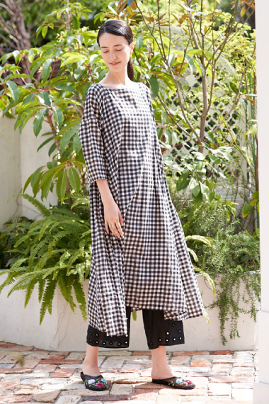
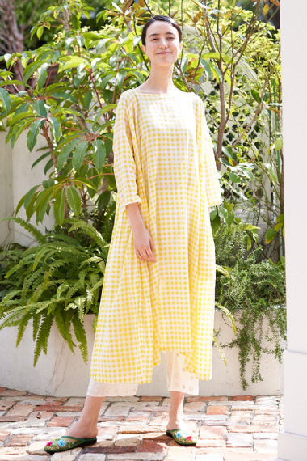
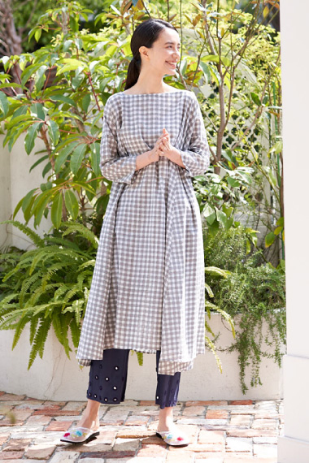
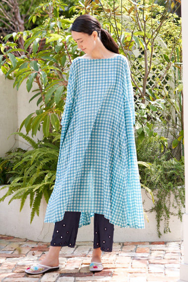
ギンガムチェックブラウス
¥25,920（税込・配送料別）
たっぷり、ゆったり。
オーバーサイズのシャツブラウスです。
オーバーサイズのシャツブラウスです。
ギャザーワンピースと同じ、
ギンガムチェックの布。
色も同じ、６色がそろっています。
ギンガムチェックの布。
色も同じ、６色がそろっています。
パンツにも、スカートにも合わせやすい、
ほどよく長い着丈です。
ボトムスにインしたり、裾を結んだり、
前ボタンを開けて、はおりものとしても。
いろいろに楽しめるアイテムです。
ほどよく長い着丈です。
ボトムスにインしたり、裾を結んだり、
前ボタンを開けて、はおりものとしても。
いろいろに楽しめるアイテムです。
このシャツブラウスは、
４月の「生活のたのしみ展」を機に、
ほぼ日のためにつくってくださったもの。
かたちはベーシックですが、
細かいところに詰まった手仕事を見るのが、
楽しいんです。
共布の、まあるいボタン。
このまん丸のボタンは、
綿を布で包んで、手縫いで作られています。
着ているときやお洗濯のとき、
微笑んでしまいそうなポイントですね。
４月の「生活のたのしみ展」を機に、
ほぼ日のためにつくってくださったもの。
かたちはベーシックですが、
細かいところに詰まった手仕事を見るのが、
楽しいんです。
共布の、まあるいボタン。
このまん丸のボタンは、
綿を布で包んで、手縫いで作られています。
着ているときやお洗濯のとき、
微笑んでしまいそうなポイントですね。
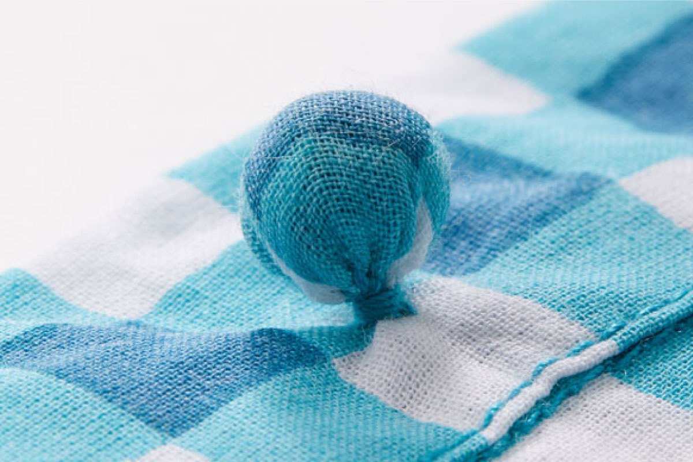
ミラーワークパンツ
¥19,440（税込・配送料別）
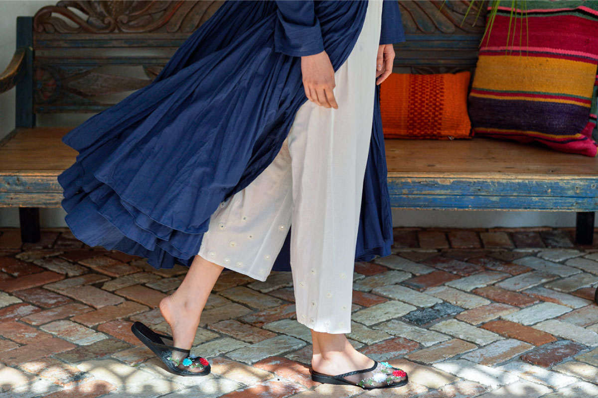
ワンピースにアンダーパンツというのは、
かれんさんが提案する組み合わせ。
あくまで主役はワンピースなのですが、
アンダーパンツをはくと、
足元にもうひとつの表情がうまれるんです。
かれんさんが提案する組み合わせ。
あくまで主役はワンピースなのですが、
アンダーパンツをはくと、
足元にもうひとつの表情がうまれるんです。
裾には、ちいさな鏡が手刺繍で縫いとめられていて、
歩くたびにキラキラと光るようすが、とてもきれい。
鏡も、手作業で割ってつくられています。
歩くたびにキラキラと光るようすが、とてもきれい。
鏡も、手作業で割ってつくられています。
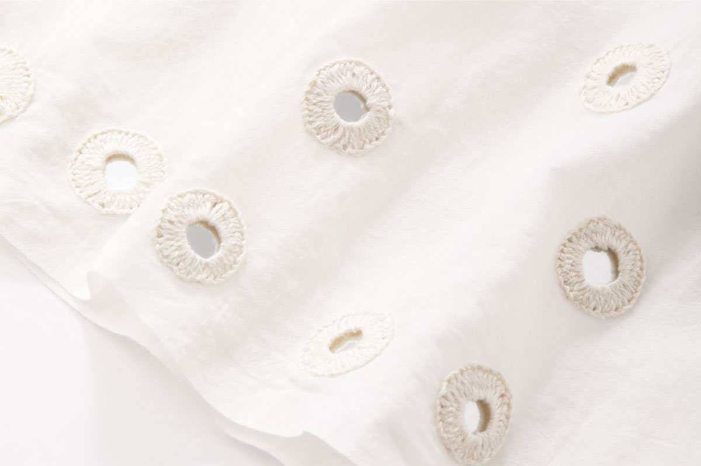
このミラーワーク、
インド西部の砂漠地帯、グジャラート州では、
魔除けの意味をもつのだそう。
そんな手仕事をさりげなく取り入れたのが、
このパンツです。
インド西部の砂漠地帯、グジャラート州では、
魔除けの意味をもつのだそう。
そんな手仕事をさりげなく取り入れたのが、
このパンツです。
やわらかなコットン素材、ウエストはゴムで、
リラックスしつつ、活動的に動けます。
ほどよいゆとりがあるので、
脚のラインが気にならず、
風をはらんだ裾がひるがえっても安心。
大きな歩幅で、どんどん歩きましょう。
リラックスしつつ、活動的に動けます。
ほどよいゆとりがあるので、
脚のラインが気にならず、
風をはらんだ裾がひるがえっても安心。
大きな歩幅で、どんどん歩きましょう。
2019-07-02（TUE）